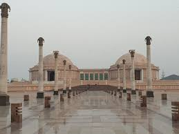

The Veer Bhadur Singh Planetarium or the Taramandal is a state-of-the-art planetarium situated in Gorakhpur, Uttar Pradesh. It is a source of amusement and knowledge to the locals and makes for a unique experience. The planetarium conducts 4 shows, each of 45 minutes each on all days except Mondays. These shows are educative for children and a must see.Vir Bahadur Singh Planetarium (also spelled 'Veer' or 'Bir') is a tourist attraction in Gorakhpur, Uttar Pradesh, India. It has been run by the Council of Science & Technology, Uttar Pradesh since 21 December 2009.[1] This planetarium runs three daily, 45-minute shows at 1pm, 3pm and 5pm.[2] It has a dome size of 18m and a seating capacity of 395.[3]It is based on digital technology, and six equipments of CRT, Evans and Sutherland are installed here
Vir Bahadur Singh Planetarium (also spelled 'Veer' or 'Bir') is a tourist attraction in Gorakhpur, Uttar Pradesh, India. It has been run by the Council of Science & Technology, Uttar Pradesh since 21 December 2009.[1] This planetarium runs three daily, 45-minute shows at 1pm, 3pm and 5pm.[2] It has a dome size of 18m and a seating capacity of 395.[3]It is based on digital technology, and six equipments of CRT, Evans and Sutherland are installed here